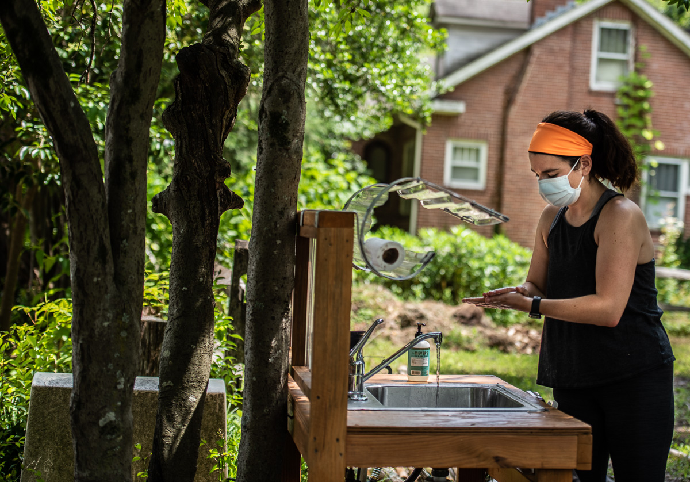
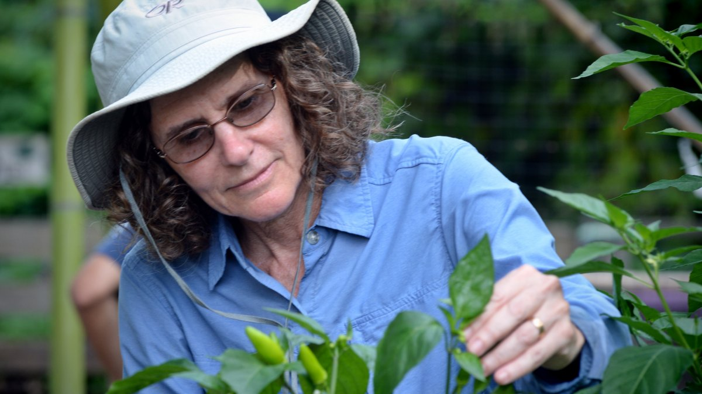

Volunteer with the Carolina Community Garden today!
Join the CCG Family!

What to Bring:
- A bottle of water
- Appropriate clothes
- Bug repellent during mosquito season
- Feel free to bring garden tools or gloves of your own, but we have plenty available for volunteers to use
- To review the full list of prohibited items as well as more information on the type of work environment created at the garden, view the CCG Code of Conduct
What to Wear:
- Mask
- Clothes that can get dirty
- Pants or shorts
- Sunscreen, hats, and sunglasses on sunny days